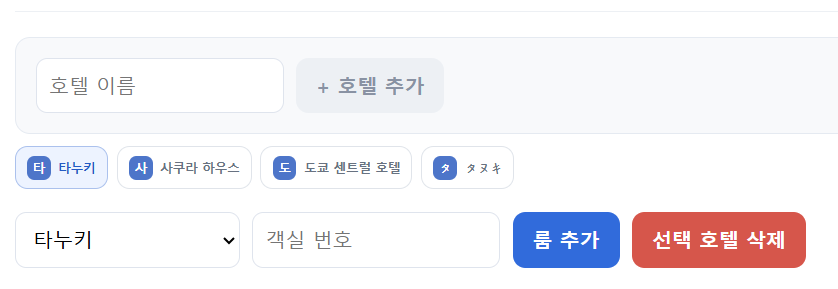
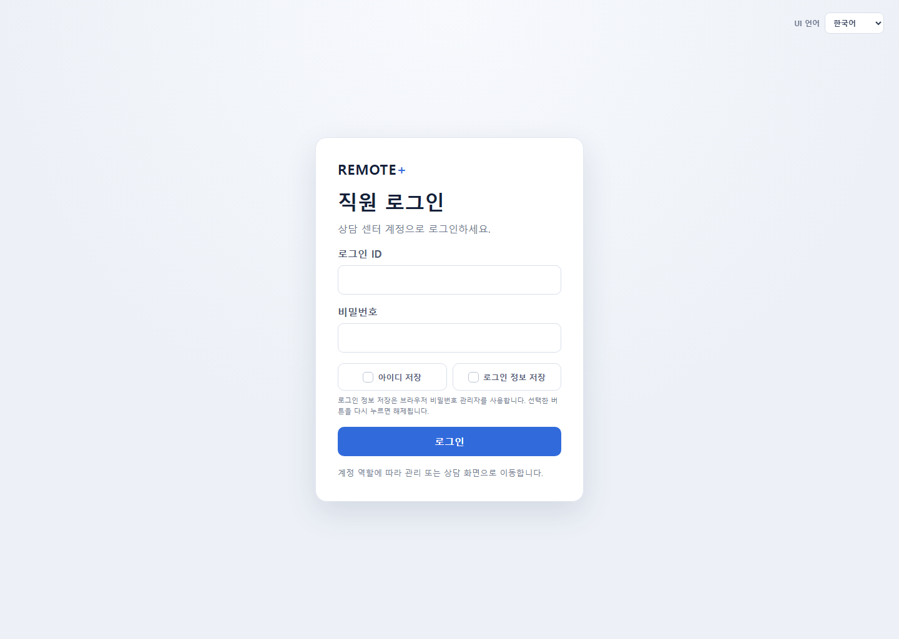
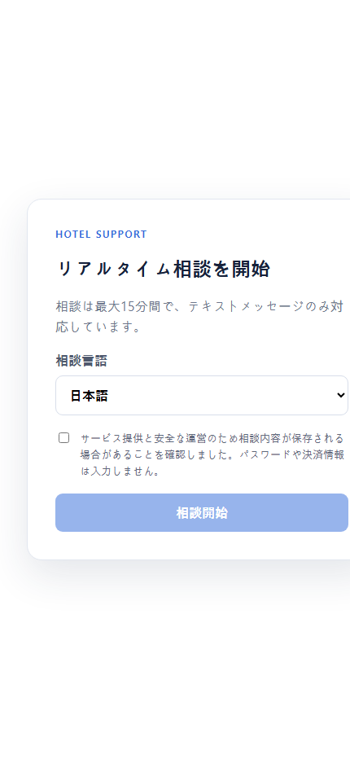

① 管理者画面
② スタッフログイン
③ お客様画面お客様がQRを読むと、スタッフの相談一覧に届きます。スタッフはチャットで返事をします。
管理者IDでログインし、上部の「管理者ページ」から「ホテル管理」を開きます。
客室を追加したら、客室ごとのQRコードを表示して印刷します。お客様はこのQRから相談を始めます。
スタッフIDでも管理者IDでも、入口は同じです。ログイン後は役割に合わせた画面が自動で開きます。
新しい相談は左の一覧に届きます。相談を選ぶと右側で会話が開きます。
お客様には「客室のQRを読み、言語を選んで相談開始を押してください」と案内します。
まず画面を一度更新して、もう一度試します。それでも直らない場合は下を確認します。
| ログインできない | IDとパスワードをもう一度確認します。パスワードを変えた後は、すべてのPCで再ログインが必要です。 |
|---|---|
| 新しい相談が見つからない | 「Current chat room」を開き、ホテル・言語を「すべて」に戻します。検索欄の文字も消します。 |
| QRが開かない | ホテルや客室を削除していないか確認します。正しい客室のQRをもう一度表示して印刷します。 |
| 返信できない | 相談が終了または15分の期限切れになっていないか確認します。終了後の内容は「Log」で見られます。 |
| 通知が来ない | Agent画面を開きます。ブラウザ通知を使う場合は、画面上部の通知設定を許可します。 |